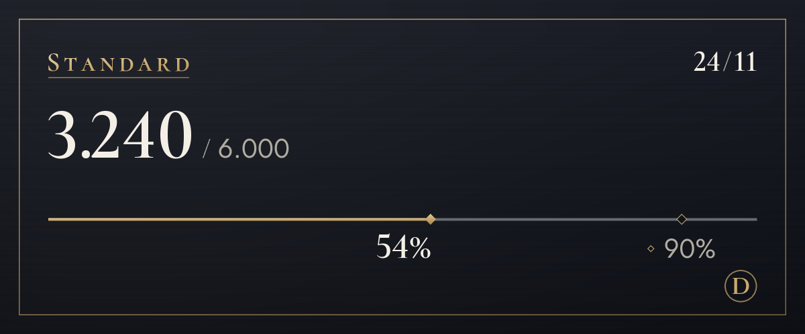

Piani
Inizia gratis e cambia piano quando ti serve di più.
Siamo in fase pilota, quindi non accettiamo ancora pagamenti. Quando i pagamenti saranno attivi, potrai abbonarti e disdire da questa pagina. Durante la fase pilota la traduzione non si ferma quando superi il limite.
Free
0 $
Prima provalo (vedere l'originale non conta)
100 traduzioni al mese (circa 3 al giorno), 4 toni per i primi 14 giorni
Rientrano in questo limite anche il testo nelle immagini (di solito 4 per immagine) e la traduzione sovrapposta (di solito 6)
Come iniziareLite
4,99 $/mese
Scegli un tono per ogni server: del tu con gli amici, del lei in un posto nuovo
1.200 traduzioni al mese (circa 40 al giorno), 4 toni, 20 in più al giorno a limite esaurito
Rientrano in questo limite anche il testo nelle immagini (di solito 4 per immagine) e la traduzione sovrapposta (di solito 6)
Scegli (Lite)Standard
Consigliato
9,99 $/mese
Più che sufficiente per chattare ogni giorno
6.000 traduzioni al mese (circa 200 al giorno), 4 toni, 20 in più al giorno a limite esaurito
Rientrano in questo limite anche il testo nelle immagini (di solito 4 per immagine) e la traduzione sovrapposta (di solito 6)
Scegli (Standard)Plus
14,99 $/mese
Il più capiente, per chi traduce tanto
20.000 traduzioni al mese (circa 667 al giorno), 4 toni, 20 in più al giorno a limite esaurito
Rientrano in questo limite anche il testo nelle immagini (di solito 4 per immagine) e la traduzione sovrapposta (di solito 6)
Scegli (Plus)
- I prezzi sono in dollari statunitensi. Le tasse del tuo paese si aggiungono al momento del pagamento.
- I piani a pagamento sono abbonamenti mensili con rinnovo automatico. Puoi disdire quando vuoi, e il pagamento successivo non viene addebitato.
- Il piano Free non diventa mai a pagamento da solo.
- Il diritto di recesso è limitato per la parte già utilizzata, e puoi provare prima il piano Free.
- Le traduzioni sono fatte da un'IA (Claude di Anthropic). Può sbagliare, quindi per le cose importanti controlla anche l'originale.
- I dettagli sono nei Termini di servizio e nella Politica di rimborso.
Come si contano le traduzioni
I limiti dei piani si contano in traduzioni. Un messaggio tradotto in una lingua vale 1 traduzione.
- Testo
- 1 per messaggioI messaggi lunghi contano 1 in più ogni 200 caratteri di coreano, cinese o giapponese, oppure ogni 500 caratteri nelle altre lingue. I messaggi senza nulla da tradurre non vengono contati.
- Clic destro
- 1 per messaggioCome per il testo. Vedere l'originale o un'altra lingua non conta.
- Testo nelle immagini
- Di solito 4 per immagine3 per leggere un'immagine, più la traduzione del testo letto. Le immagini senza testo non vengono contate, e si leggono fino a 4 immagini per messaggio.
- Traduzione sovrapposta
- 6 per un blocco di testo3 per la lettura, 1 per la traduzione e 2 per il disegno. Ogni blocco in più aggiunge almeno 1 per la sua traduzione, e ogni 16 blocchi contano come un'immagine. Oltre 16 blocchi vedi prima il costo, e si procede quando confermi (fino a 128 blocchi). Cambiare carattere non conta.
- Messaggi vocali In arrivo
- 1 al secondo di audioLa trascrizione e la traduzione dei messaggi vocali inviati dall'app per telefono sono in preparazione. Quando la funzione sarà attiva, si aggiungerà la traduzione di ciò che è stato detto, e i messaggi senza parlato non conteranno.
- Limite giornaliero
- 200 immaginiSi conta per persona ed è uguale in tutti i piani, così un uso automatizzato massiccio non può bloccare le traduzioni di tutti gli altri.
- Chi paga
- Le traduzioni aperte dalle icone delle immagini o con il clic destro contano per chi ha premuto, non per chi ha pubblicato.
Per esempio
Con 200 traduzioni al giorno
l'equivalente giornaliero di Standard
Abbastanza per tradurre qualche immagine e chiacchierare comunque tutta la sera.
Con 40 traduzioni al giorno
l'equivalente giornaliero di Lite
Abbastanza per un'ora di chiacchiere con gli amici.

/traduci utilizzo.Domande frequenti
Quando si apriranno i pagamenti?
Siamo in fase pilota, quindi non accettiamo pagamenti e tutti usano il piano Free. I pagamenti si apriranno dopo la registrazione dell'attività e l'attivazione del fornitore di pagamenti, e annunceremo la data nelle novità del server di assistenza e su questa pagina. In Corea si paga in won, altrove in dollari statunitensi.
Come faccio a disdire?
Quando i pagamenti saranno attivi, disdici dalla pagina dei piani di questo sito, lo stesso posto in cui ti abboni. Con la disdetta si ferma il pagamento successivo, e mantieni il piano fino alla fine del periodo già pagato. Anche la schermata «Gestisci piano» nel pannello delle impostazioni del bot porta qui.
Come funzionano i rimborsi?
Puoi ottenere il rimborso completo del tuo primo pagamento entro 7 giorni. Rimborsiamo anche in caso di disservizi o se il servizio non corrisponde a quanto descritto in questa pagina. Il resto è nella Politica di rimborso.
Le immagini vengono salvate?
Il bot non le salva. Le immagini vanno ad Anthropic, che ne legge il testo, e a te viene mostrato solo il risultato. Non viene inviato nulla finché non premi il pulsante. Neanche il testo letto viene salvato; solo la traduzione segue la regola della cache delle traduzioni (30 giorni). Perché un cambio di carattere venga ridisegnato subito, un'immagine per cui premi «Sovrapponi» resta 15 minuti solo in memoria, insieme al testo letto e alla sua traduzione.
Chi fa le traduzioni?
Un'IA (Claude di Anthropic). La stessa IA legge il testo nelle immagini. Le traduzioni possono essere sbagliate, quindi per le cose importanti controlla anche l'originale. Le immagini con la traduzione sovrapposta riportano «Traduzione dell'IA» nella descrizione (testo alternativo) e nella nota sotto il risultato.